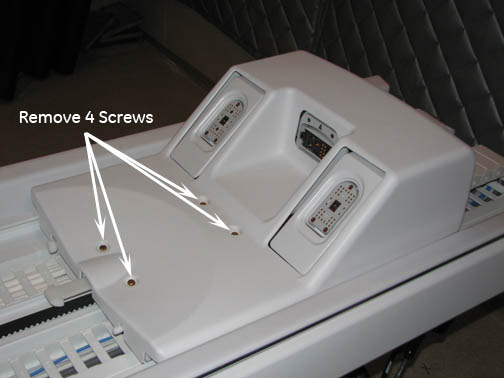
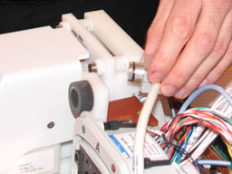
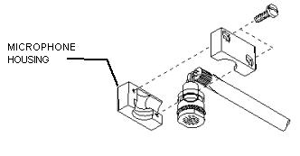
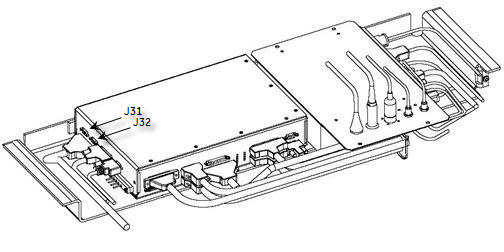
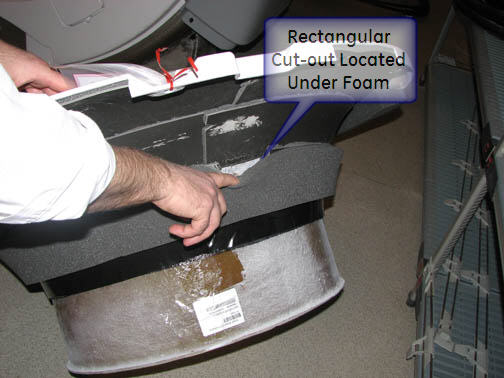

Operating Documentation
Direction 5500113, Rev# 3
Discovery MR450 1.5T Service Methods
Module Version 6.0, Version Date 12/8/09
Operating Documentation |
| Required Persons | Preliminary Reqs | Procedure | Finalization |
|---|---|---|---|
| 2 | Not Applicable | 1 to 2 hrs | Not Applicable |
| Item | Qty | Effectivity | Part# | Manufacturer | |
|---|---|---|---|---|---|
| Non-Magnetic Service Tools | 1 | - | 5112581 | - | |
| Item | Qty | Effectivity | Part# | Manufacturer |
|---|---|---|---|---|
| Epoxy | 1 | - | 46-282264P1 | - |
| Nozzle | 1 | - | 46-320187P1 | - |
| Item | Qty | Effectivity | Part# | Manufacturer | |
|---|---|---|---|---|---|
| Cable Track Assembly - Functions | 1 | - | See FRU Manual | - | |
| Rear Microphone Assembly | 1 | - | See FRU Manual | - | |
Prior to installing a replacement microphone, plug the replacement into the SRI (J31) to verify that the replacement microphone will address the issue.
Position the LPCA to the far rear of the enclosure.
Follow all Lock Out/Tag Out procedures by turning off the applicable breaker in the PDU. (See LOTO for RF Amplifier and PEN Cabinet (Magnet Room Electronics.)
To remove the LPCA Cover, remove the four (4) screws shown in Illustration 1.
Illustration 1: Removing LPCA Cover

Pull the microphone and housing out of the LPCA. (See Illustration 2.)
Illustration 2: Removing Microphone and Housing from LPCA

Remove the microphone from its housing by gently pulling microphone to the rear. (See Illustration 3.)
Illustration 3: Removing Microphone from Housing

To remove and install rear microphone, refer to LPCA Cable Take-up Replacement to replace the Cable Track.
| NOTE: | Individual cables cannot be ordered or replaced. Order the entire cable track. |
The rear microphone attaches to the SRI (located underneath the magnet) at J31. (See Illustration 4.)
Illustration 4: SRI Cables

Install the Microphone into the housing.
Install the Microphone and housing into the LPCA.
| NOTE: | Take care that the receive cables are tucked in well, so as to not nick the exposed insulation on the cable track wires. |
Install the LPCA cover and 4 (four) screws.
Follow all Lock Out/Tag Out procedures by turning off the applicable breaker in the PDU. (See LOTO for RF Amplifier and PEN Cabinet (Magnet Room Electronics).)
Remove the Split Bridge. (See Bridge and Longitudinal Drive Belt Replacement.)
Disconnect the other end of microphone cable at J32 located on the SRI. (See Illustration 4.)
Remove the front end bell, and handle the microphone cabling carefully while pulling it out. (See Front End Bell Removal and Installation.)
Detach the microphone cable from the front cover.
Carefully open the fasteners, and detach the microphone cable from the front cover.
Align the new microphone assembly in the rectangular cut-out located under the foam of the front end bell. (See Illustration 5.)
Place a 6 mm diameter pin through the end bell hole for the microphone to a 4mm distance above nominal finished surface.
Locate the microphone assembly over the pin, and glue in place with Plexus MA300 or MA310 adhesive.
Illustration 5: Microphone Placement on Front End Bell

Glue all around the microphone assembly bottom plate only. Remove the pin when the bonding agent has cured.
Perform a quick check to make sure the microphone is functioning properly.